We-Dentify — one workspace for dental practices and their labs. (2018)
Dentists and dental technicians work on the same patients from different places. We-Dentify gives both sides one shared record for every case — what’s being made, for which tooth, who is responsible and what has been agreed — so nothing gets lost between the chair and the lab.
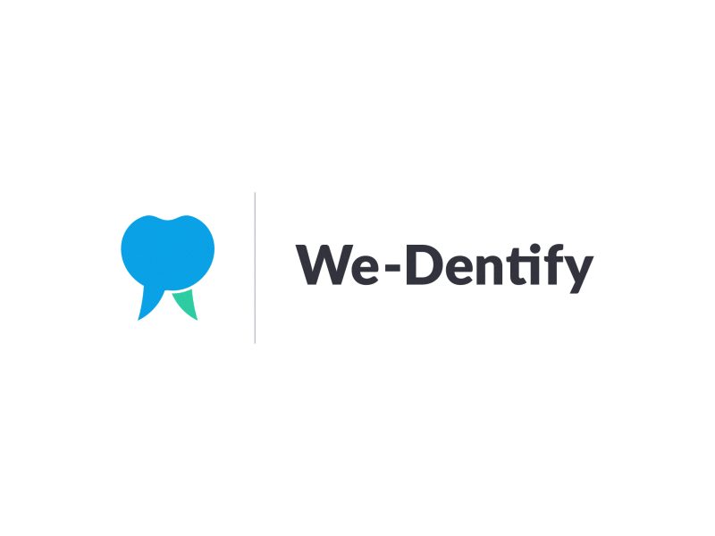
The value
Instead of each side keeping its own notes, the practice and the lab work in the same work order.
The dentist marks the teeth and the prosthetics needed, the technician sees exactly what to make, and every task, cost, photo and message stays attached to the patient.
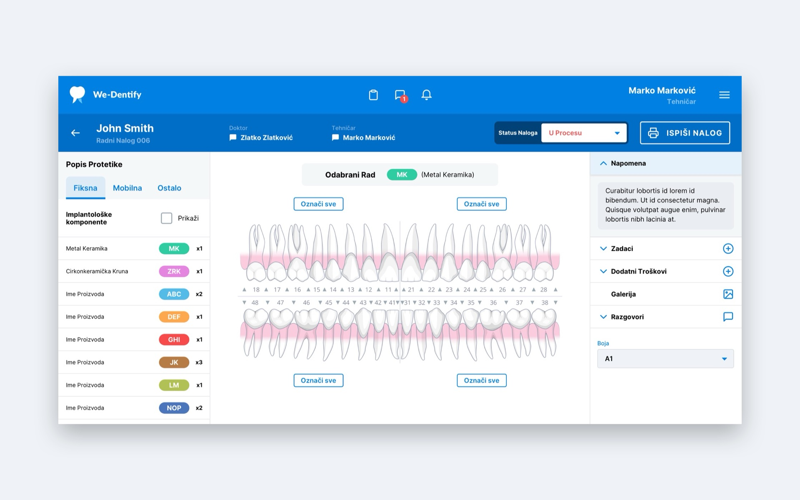
Impact on the business
For practices and labs, We-Dentify replaces scattered communication with a clear, shared process.
Clear responsibility
Every work order names a responsible therapist and technician, so everyone knows who owns the next step.
Information in one place
Tasks, conversations, extra costs and photos live with the case instead of being spread across separate calls and messages.
A connected network
Practices and labs connect as partners — and partners who don’t use the app yet can still be added to a case.
Overview for owners
Reports show completed and open work for any period, and owners decide who on the team sees what.
Key features
The features that carry a case from the first visit to the finished work.
Work orders on a teeth chart
Teeth or whole jaws are marked directly on the chart, and colour labels show which prosthetic belongs to which tooth at a glance.
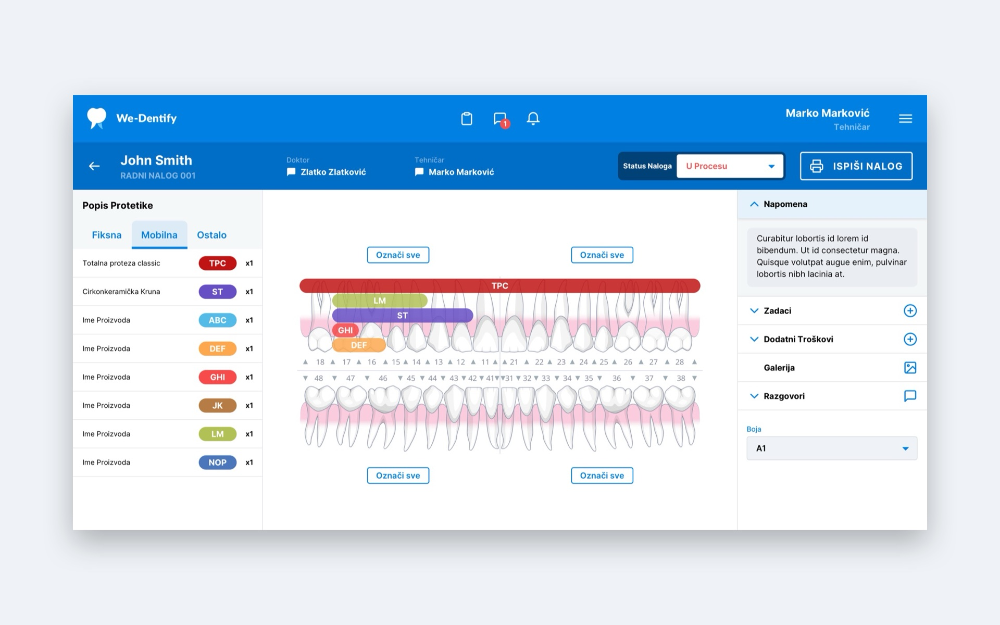
Patients and partners at a glance
The patient list shows open cases first, with the partner practice or lab and the status of each work order.
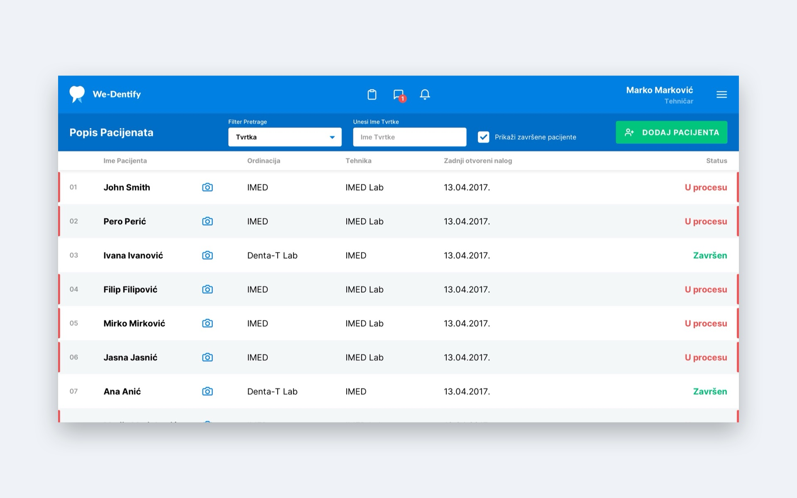
Tasks for the day
Each person sees their tasks by day and ticks them off as they go; owners can filter by employee.
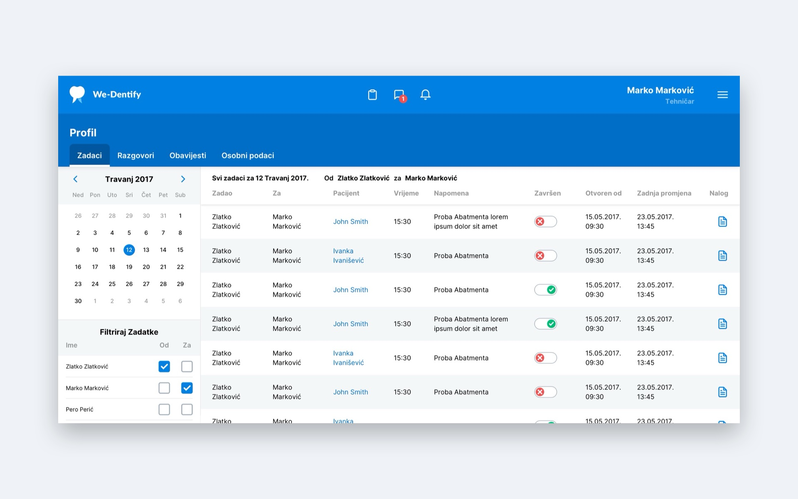
Conversations that stay with the case
Messages are attached to the work order, so the whole history of a case is always one click away.
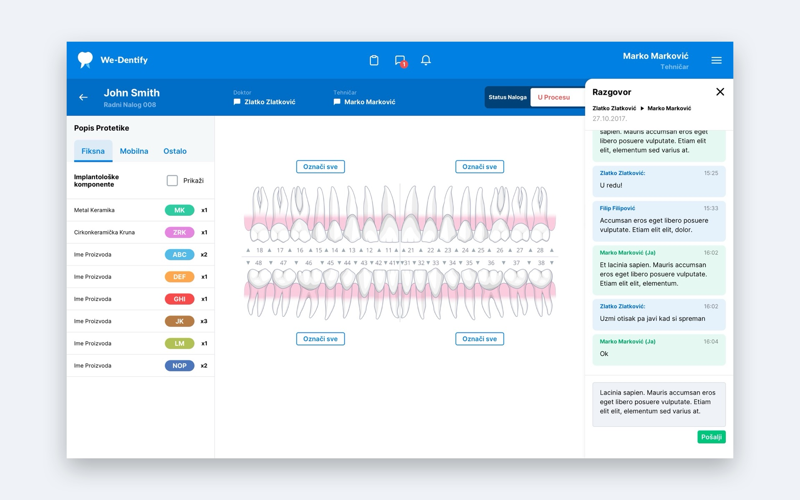
A partner network
Practices and labs invite each other as partners; accepted partners become available when adding patients.
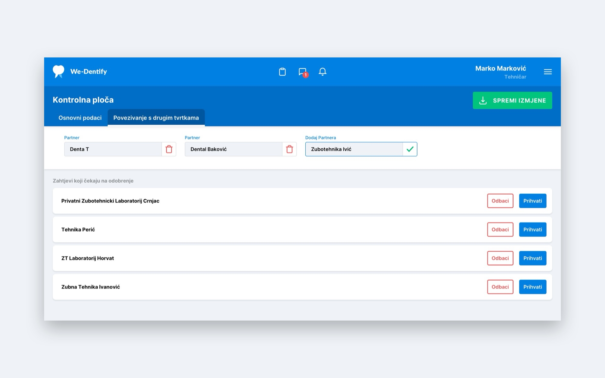
Reports
Choose a period to see how much work was marked on work orders — open cases in progress or completed work.
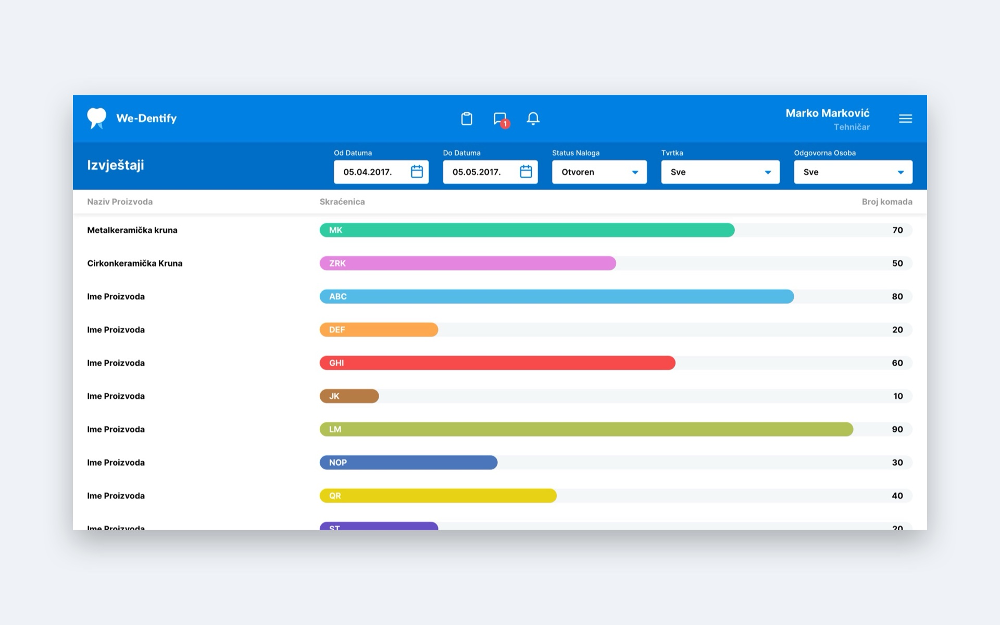
On every screen
The key lists also adapt to tablet and phone, with a compact header and simplified rows.
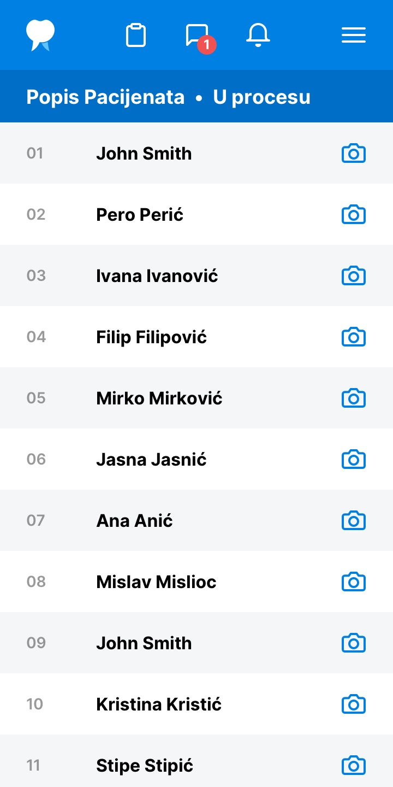
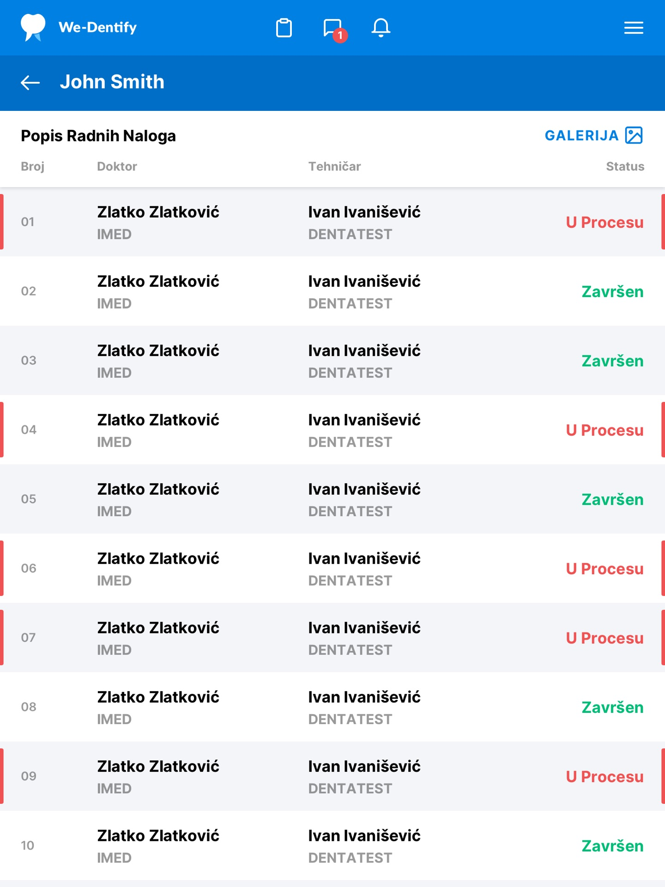
Day to day, before and after
How the daily routine between a practice and its lab changes once every case lives in one shared work order.
Starting a case
BeforeCase details passed on by phone or on a paper form.
With We-DentifyThe dentist opens a work order and picks the responsible technician — the lab sees the new case straight away.
Describing the work
BeforeWritten descriptions of which teeth and what to make, open to interpretation.
With We-DentifyTeeth and prosthetics are marked on the chart with colour labels, so the technician sees exactly what is needed.
Questions and changes
BeforeCalls and messages that live outside the case and are easy to lose.
With We-DentifyConversations are attached to the work order, so the whole history is in one place for both sides.
Photos and extra costs
BeforePhotos sent separately and costs noted elsewhere, then matched up by hand.
With We-DentifyPhotos are uploaded to the case gallery and unplanned costs are added to the order as they happen.
Who does what, and when
BeforeReminders depend on memory, notes and follow-up calls.
With We-DentifyTasks are assigned to people and appear in their day; changes to a case notify the people responsible for it.
Closing and reporting
BeforeFinished work counted up manually at the end of the month.
With We-DentifyThe therapist closes the order when the work is handed in, and reports show completed and open work for any period.
What it means for the teams
Less time goes into chasing information and more into the work itself. Handovers are clearer, fewer questions need a phone call, and everyone works from the same up-to-date case.
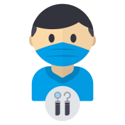
Dentists
Brief the lab once, on the chart, and follow progress without calling to ask.
Practices & owners
See who is responsible for each case and how much work is open or done in any period.
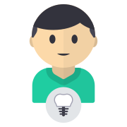
Technicians
Start from a precise brief, with photos and the full conversation one click away.